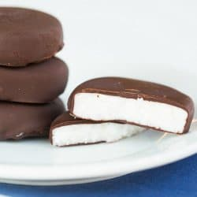

York Peppermint Patties Recipe

York peppermint patties, one of America's favorite treats.
York Peppermint Patties were originally invented by Henry Kessler in York in 1940. It's a simple, yet delicious treat for any age. It is primarily made of powdered sugar coated in chocolate. It's light, minty, and oh so sweet. Try your hand at making this homemade recipe here!
Ingredients
- 1 cup of sweetened condensed milk
- 1.5 tsp of peppermint extract
- 5(ish) cups of powdered sugar
- 4 cups of melting chocolate (I used semi-sweet)
- 2 tsp of shortening (or coconut oil)
Directions
- Add extract to milk.
- Skiwky add the powdered sugar until a firm dough forms (you can use a stand mixer),
- Roll out on parchment paper.
- Cut out discs.
- Freeze until firm (~20 mins).
- Before removing from freezer, melt chocolate and shortening together (double boiler works best).
- Take discs from freezer and carefully dip into melted mixture.
- Place chocolate coated discs onto parchment to cool to room temperature before refrigerating.
Note: best left in refrigerator to keep chocolate from melting and to preserve the crispiness.